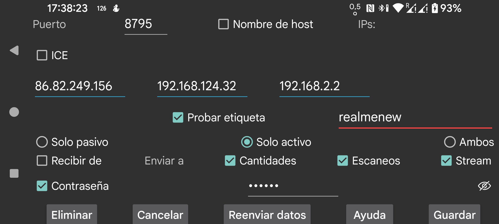

ar be de es fr hi it nl pl pt ru sv tr uk uz zh en
Aquí defines una conexión con otra instancia de Juggluco. Juggluco en un dispositivo envía datos por IP/TCP a Juggluco en otro dispositivo. Para que exista la conexión, una de las dos instancias debe escuchar en un puerto y la otra debe conectarse a ese puerto. El puerto del Juggluco que estás usando aparece en la pantalla anterior, menú central izquierdo → Clon. En esta pantalla se muestra el puerto con el que esta instancia se conecta cuando inicia la conexión activamente.
Si la instancia actual de Juggluco no puede escuchar en un puerto, selecciona Solo activo. Si el otro extremo no puede escuchar, selecciona Solo pasivo. En los demás casos activa Ambos. El Juggluco del otro extremo debe configurarse de forma complementaria: Solo pasivo si aquí pones Solo activo, Solo activo si aquí pones Solo pasivo y Ambos si aquí pones Ambos.
Si esta instancia inicia la conexión activamente, debes indicar una IP. Si ese dispositivo tiene varias IP, puedes indicar varias, por ejemplo una para la red de casa y otra para un punto de acceso personal. No pongas nunca las IP de varios dispositivos distintos, porque entonces una parte de los datos se enviará a un dispositivo y otra parte a otro.
Hostname: permite indicar un único nombre de host en lugar de IP. Esto hace la conexión dependiente de un servidor de nombres y, por tanto, más lenta y más vulnerable a problemas de resolución. Solo conviene usarlo si no puedes configurar una IP estática y ese nombre de host se asigna automáticamente a la IP dinámica.
En todos los casos salvo Solo activo puedes activar Detectar. Entonces Juggluco guardará la primera IP que se ponga en contacto con él.
Hay dos formas de determinar quién se conecta:
La conexión puede usarse para recibir o para enviar. Selecciona Recibir de para recibir datos desde esa conexión. Para enviar datos, debes indicar qué tipo de datos se enviarán:
Cantidades: dosis, comida y ejercicio.
Scans: datos obtenidos al escanear el sensor, es decir, Scans y History.
Stream: datos recibidos por Bluetooth desde los sensores.
A veces el dispositivo receptor ya tiene datos. Puedes indicar hasta qué fecha están presentes.
Inicio: no hay datos presentes.
Ahora: todos los datos están presentes.
Fecha específica: determinada por la posición inicial de la pantalla.
Si añades una nueva fuente de datos a una conexión ya existente, esa fecha solo afecta a la fuente añadida. Por ejemplo, si ya se envían Scans y Stream y ahora añades Cantidades, esa fecha solo determina desde cuándo se enviarán las cantidades.
Si los dos dispositivos están conectados mediante una conexión no segura, puedes cifrar y firmar los datos introduciendo en ambos lados la misma contraseña de hasta 16 caracteres.
QR: crea el otro extremo de la conexión escaneando un código QR con el otro teléfono.
En la situación más sencilla, todas las conexiones están dentro de tu red doméstica y se pueden usar IP locales. También es posible crear una conexión por Internet mediante Wi‑Fi. En ese caso debes revisar la documentación de tu módem o router para saber cómo reenviar un puerto externo hacia una IP y un puerto de tu red doméstica.
Dos smartphones conectados a Internet mediante datos móviles pueden comunicarse directamente si uno de ellos puede escuchar en un puerto de red. Si ninguno puede hacerlo, aún pueden comunicarse a través de un tercer dispositivo. Una posibilidad es ejecutar Juggluco en un tercer Android conectado a Internet en casa y conectar a él ambos teléfonos. Otra posibilidad es usar el programa de línea de comandos de Juggluco en un equipo, por ejemplo tu PC o Amazon AWS: https://www.juggluco.nl/Juggluco/cmdline/index.html
Guías sobre reenvío de puertos:
https://portforward.com/how-to-port-forward/
https://stevessmarthomeguide.com/understanding-port-forwarding/
Es posible recibir por Bluetooth valores de glucosa en un dispositivo sin NFC de esta manera:
En esta configuración escaneas con un dispositivo y otro recibe por Bluetooth los valores de glucosa, pero ambos dispositivos deben tener todos los datos del sensor. Por tanto, ambos deben recibir tanto datos de Scan como de Stream. Debes devolver siempre los datos de Stream al dispositivo con NFC y los datos de Scan al dispositivo sin NFC; de lo contrario pueden reutilizarse datos de autenticación antiguos o sobrescribirse datos nuevos con datos antiguos.
No es necesario transferir las cantidades.
Otra forma completamente distinta de crear una conexión es ICE (Interactive Connectivity Establishment). Permite crear una conexión entre dos instancias de Juggluco sin necesidad de reenvío de puertos. En la mayoría de los casos se obtiene una conexión directa entre dos teléfonos, sin servidor intermedio. A veces eso no es posible y se necesita un servidor TURN, que puede indicarse en menú central izquierdo → Clon → Servidor TURN. En otros casos los servidores solo sirven para que los dos teléfonos se encuentren. Para ello debes indicar una Etiqueta ICE que solo compartan ambos extremos y que no use ningún otro usuario de Juggluco. En un lado de la conexión debe ponerse 0 y en el otro 1. Además, ambos lados deben compartir una etiqueta, aunque esa solo necesita ser única dentro de esos dos teléfonos. En lugar de configurarlo todo manualmente, puedes usar menú central izquierdo → Clon → QR automático y escanear el código QR desde el teléfono del otro extremo.
La configuración de red en ambos lados debe coincidir exactamente; una sola diferencia puede hacer imposible la transferencia.
A veces la conexión se queda atascada y hay que reiniciarla apagando y encendiendo Wi‑Fi. En ocasiones hay que hacerlo varias veces antes de que vuelva a funcionar. A veces también es necesario pulsar Sync.
Cambiar una conexión solo activo / solo pasivo a ambos, o al revés, puede marcar la diferencia. Por ejemplo, una conexión reloj‑teléfono por Bluetooth puede funcionar solo si el reloj está en solo activo y el teléfono en solo pasivo. En mi red Wi‑Fi doméstica, en cambio, ambos también funciona.
Hay que tener en cuenta que las IP cambian cuando cambia la conexión de red. Una conexión a través de la red doméstica usa IP distintas de una conexión a través de un punto de acceso personal.